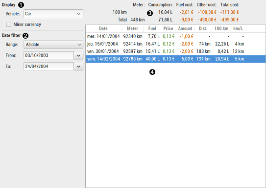

Using vehicle cost report

 Display
Display
| Vehicle | select the category used for your vehicle costs |
|---|
 Date
filter
Date
filter
| Range | fast select a date with predefined range |
|---|---|
| From / To | specify date bound limit to restrict the results to |
 Global
results
Global
results
| Meter | the meter of the vehicle |
|---|---|
| Consumption | fuel consumption |
| Fuel cost | cost of the consumed fuel |
| Other cost | the other cost for the vehicle (insurance, repair, ...), which mean the transaction affected to the current vehicle cost category not containing (d=xx v=xx) |
| Total cost | the total cost for the vehicle in the selected period |
 Detailed
results
Detailed
results
his is a list-view which contains the detailed date by date
refuel done for the selected vehicle.
The list is sortable, just click into the column title to change
the sort order.
At the bottom is the total line, except for price which is the
average price by liter.